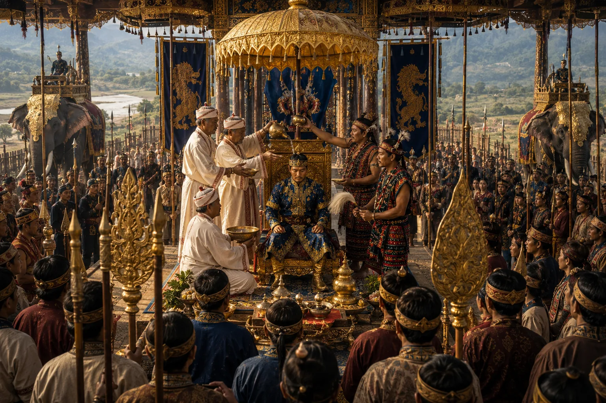

Institution of the Singari-Gharutha Coronation
c. 1398 · The coming of Sukaphaa

Sudangphaa inaugurates the sacred Singari-gharutha ceremony, ascending a raised platform of Singari timber, washing in sacred waters, and killing a bull/buffalo.
Sources have not yet been catalogued for this record.
People: Sudangphaa (Bamuni Konwar)
Open this scene in the interactive archive · Follow this event on MAP